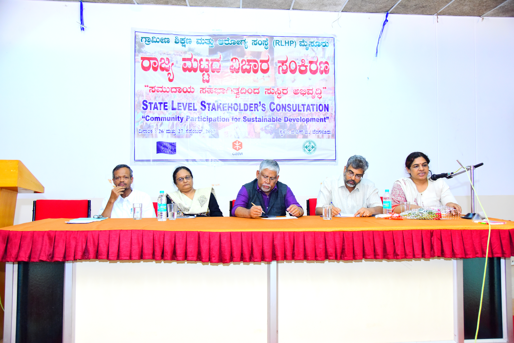
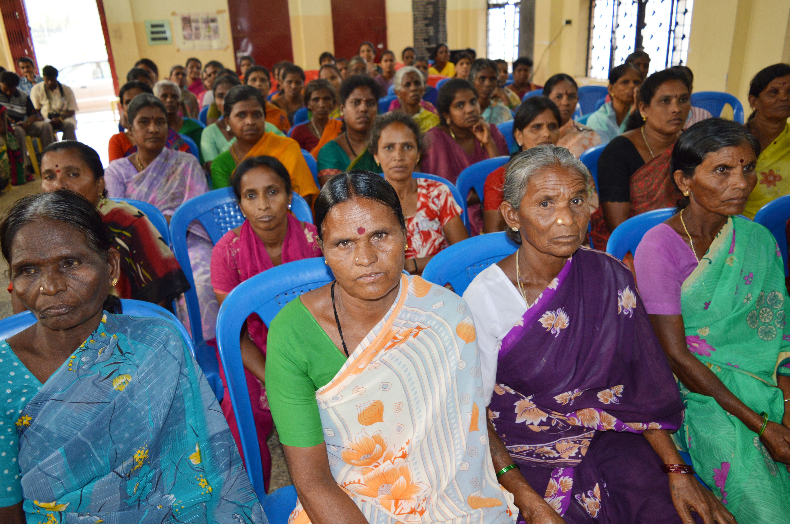
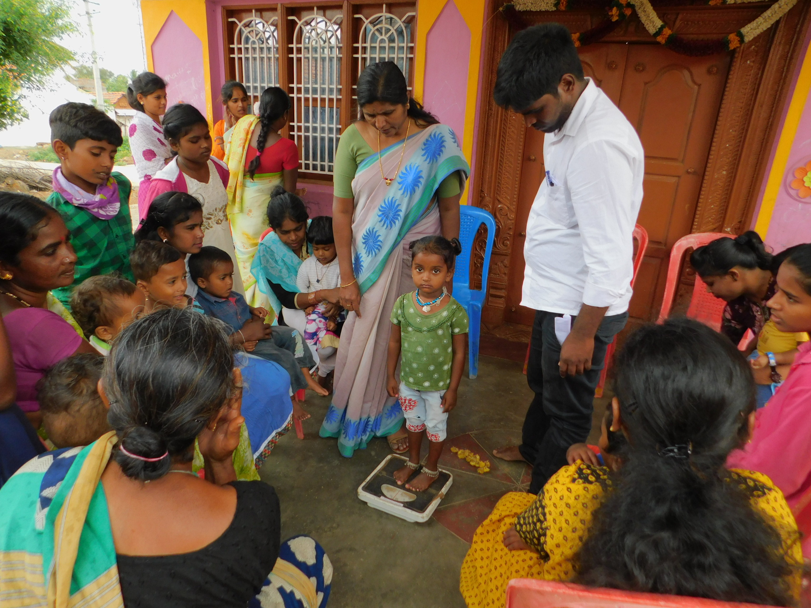

Grassroots interventions where RLHP-supported communities transformed challenges into lasting victories.

For more than 30 years, over 50 households in the remote tribal hamlet of Kashiram Thanda had no motorable road connecting them to the outside world. During monsoon seasons, the entire community faced extreme isolation — unable to access markets, medical facilities, schools, or government services. Daily life was a constant struggle, especially for women, children, and the elderly.
Through RLHP's Mass Contact Programme (MCP) and structured civic training workshops, the community was empowered with knowledge about their constitutional rights to public infrastructure and entitlements under government schemes. Armed with this understanding, the villagers organized themselves and petitioned the Gram Panchayat with a formal written representation, subsequently escalating to the Taluk Administration.
Their persistent, peaceful advocacy yielded concrete results: the Taluk Administration sanctioned a ₹15 Lakh Cement Concrete (CC) road project connecting the hamlet to the main district road. The construction was completed within a year, permanently transforming village access. Children can now reliably attend school during rains, agricultural produce reaches markets, and medical emergencies no longer put lives at risk.

In Mirzapur village of Basavakalyana Taluk, the widespread proliferation of unlicensed illicit liquor dens had become a severe threat to community wellbeing. Family income was being eroded as men spent earnings on alcohol, women and children faced increased domestic violence and neglect, and the social fabric of the community was rapidly deteriorating.
RLHP's Women Sangha Federation programme intervened by organizing intensive leadership workshops where local women learned about their legal rights, the processes for filing complaints with government authorities, and peaceful protest methods. The workshops created a sense of collective solidarity and purpose among women who had individually felt powerless against entrenched illegal operators.
Galvanized by their training and emboldened by collective strength, the women sangha federations launched a coordinated campaign. They conducted peaceful public pickets outside identified illicit outlets, drawing community attention and creating social pressure. Simultaneously, they filed formal written representations with the District Excise Department and the local Police Station, documenting specific violations.
The combined public pressure and official complaints resulted in enforcement action. Illicit liquor dens were shut down, operators were penalized, and village peace was restored. The case stands as a powerful example of how RLHP's sangha empowerment approach enables communities to drive systemic change from within.

In Bannithalapura village of Gundlupete Taluk, the traditional Kamsale folk dance — a centuries-old percussion-based art form from the Kuruba Gowda community — had been exclusively performed by men for generations. This cultural exclusion was deeply embedded in village tradition and social norms, with women and girls considered ineligible to participate or learn the form.
The RLHP-formed Kiran Bedi Kishori Group, a community adolescent girls' group focused on leadership and empowerment, identified this cultural barrier as symbolic of broader gender inequalities they faced in daily life. With RLHP's encouragement and support, the group decided to challenge this taboo directly by seeking formal training in Kamsale rhythm and dance.
The girls were mentored by experienced community Kamsale practitioners who, persuaded by community dialogue facilitated by RLHP, agreed to teach them. The Kishori Group trained rigorously, mastering the intricate percussive footwork and rhythmic patterns. Their progress was remarkable — within months they were performing with genuine skill and confidence.
The group then performed publicly at district-level cultural forums, earning applause and recognition from audiences who had never witnessed women performing Kamsale. Their performances generated widespread community discussion about gender roles in cultural traditions. The state government's cultural department took note, extending formal recognition to the group's pioneering achievement. The initiative has since inspired similar efforts in neighbouring villages.